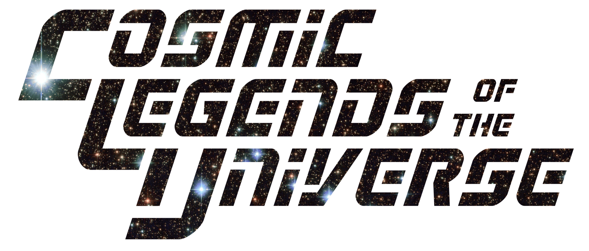

2021-Aug-20 14:00 -0700

In the great Hall of Heroes are assembled the world’s greatest superheroes: the Cosmic Legends of the Universe!
is a four-color tabletop roleplaying game where you and your friends take the roles of super-powered heroes who fight against injustice, right that which is wrong, and serve all mankind.
The Harmony Drive system created by Cat McDonald is at the heart of .
To play you’ll need:
revolves around the following three pillars:
The Power Word system and Crisis system are intentionally built to give players freedom to engage with problems in their own style. lets you be yourself, and do things in your own way, without being left behind by your team.
games is written to encourage the players to work together. Whether you’re combining your powers to use Power Combos or using your skills to overcome an opponent together, heroes in succeed or fail as a team.
The Edge Success system is built so that you have the freedom to choose failure. The Crisis system is built so that you can choose to take big hits. Good things and bad things happen to your hero, and both of these are in the your hands to choose. The Editor’s job is to give you those difficult choices.
If you’re a fascist, you’re not welcome to play this game. It’s against the rules.
If you’re reading this and thinking, “You just call everyone you disagree with a fascist,” then you’re probably a fascist, or incapable of drawing inferences from context and acknowledging a dangerous political climate that causes the oppressed to be hyperbolic.
Don’t play this game. Heal yourself. Grow. Learn. Watch some Mister Roger’s Neighborhood or something.
The term “four-color” refers to the printing process used in comics that led to most heroes having bold, primary colors for their uniforms, their bodies, their worlds.
One example is Superman’s hair having blue overtones – this was meant to display his hair as a lustrous black but the capabilities time precluded that.
Our use of the term “four-color” doesn’t refer to the print process for this game but instead to the general tone of late Silver Age and Bronze Age comics – when primary-color superheroes of the ’50s and ’60s met the social issues of the ’70s and ’80s.
In case you didn’t notice, this game is inspired by the Super Friends cartoon show that was on the air from 1973 to 1985 – also the years yours truly was age 5 and 16. It’s fair to say the show influenced how I view comics and superheroes in general.
The first season has this great opening monologue where the four heroes were “created from the cosmic legends of the universe!”
What on earth does that mean? How exactly was Bruce Wayne created from the cosmic legends of the universe?! I’ve never figured that out, but it does make a great title for this Bronze Age-inspired, four-color tabletop RPG.
American comics fans and scholars divide the history of comics into four loosely defined “ages”: the Golden Age, the Silver Age, the Bronze Age, and the Modern Age.
The Golden Age started with the introduction of Superman and the concept of superheroes in general. Many of the most well-known characters, such as Wonder Woman and Captain America, were created during the Golden Age.
Some comics in the Golden Age were simplistic fun, while others featured dark themes, shocking gore, and vile villains. A lot of Nazis were punched in those comics, which is always a good thing.
Unfortunately, racism and sexism often were major themes in Golden Age comics; examples of anti-Asian hatred are all too easy to find.
The Silver Age began when DC Comics created new versions of the Flash, Green Lantern, and others, then the Justice League of America. Marvel responded by creating the Fantastic Four, Spider-Man, the Avengers, the Hulk, the X-Men, and more.
The Silver Age also saw the creation of the Comics Code Authority, a self-censorship board created in the wake of a moral panic over the content of comics.
Superhero comics in the Silver Age followed a long list of restrictions banning everything from “horror” and “gore” to “vampires” and “cannibalism”. Heroes always won, villains always lost, and authority figures were portrayed with respect – at least, that’s what the Comics Code demanded.
The Bronze Age is less distinctly defined chronologically, but was a time when comics went through changes: becoming more socially relevant and less restrained by the CCA. More on that later.
The current age of comics is usually dated to DC’s Crisis on Infinite Earths and Marvel’s Secret Wars.
Modern superhero comics often feature antiheroes, complex storylines, and mature themes. Many of the older characters were revamped to more contemporary versions.
The CCA also withered away to nothing as the major publishers increasingly created comics without the CCA seal on the cover.
Safety tools are a way for players and Editors to communicate and check-in before, during, and after a game in order to make sure everyone is still having fun, and to provide the right support when needed.
The key to safety tools is communication and trust. There needs to be open and respectful communication alongside a culture of trust for these to work.
Playing the RPG should be enjoyable for everyone, and to help make that happen, we recommend the following techniques.
Before you even start playing an Issue of , talk about what you want to see in the game – and what you don’t want to see.
If you’re planning a long, open-ended Series, you may even want to devoted a whole session to this – called an Issue 0 in ; for shorter games you should at least touch on these topics.
Lines and veils are used to set boundaries on content in a game.
Lines are hard limits on content, things that the Editor or the players don’t want to engage in. Setting up a line means that content won’t show up in the game at all.
Veils are soft limits, things that are ok “behind a curtain” or when they “cut-to-black.” Setting up a veil means that the content might be in the game but not spotlighted or described in great detail.
Lines and veils can be adjusted as needed throughout the game.
Don’t worry, I promise the CCA isn’t going to shut down your game.
Despite how terrible the Comics Code was in reality – and it had a stifling effect on freedom of expression in comics for decades – it does give an interesting snapshot of the types of content that might show up in a Bronze Age superhero game.
The following questions are inspired by items in the Comics Code and are intended to start conversations – not end them!
As you discuss these questions as a group, anyone should feel free to request a line or veil on these or any other subjects.
Does good always triumph over evil? Does evil sometimes triumph over good?
Is profanity from NPCs acceptable? From heroes?
Should your game avoid depictions of alcohol use, drug use, or drug addiction?
Do the villains eventually get what’s coming to them, or do some get away with their crimes?
Given the history of police violence, do you want to play that out in a roleplaying game?
Do you even want to deal with the police at all in your games?
Do you want to have Storylines about corrupt judges and a justice system that doesn’t work?
Are glamorous, alluring, or even sympathetic villains fine, or would you rather have black-and-white villainy?
Do you want Nazis as villains in this game?
Are the heroes criminals themselves and wanted by the authorities? If so, which authorities, and why?
Are you okay with Storylines about the military and war?
Are there certain natural disasters, such as brushfires or earthquakes, that you’re not interested in playing out?
Would you rather not have zombies, vampires, werewolves, or other types of mythological monsters in your game?
What about more mundane creatures like spiders or snakes?
Are there other types of Crises you don’t want to deal with?
Are in-character bigotries such as ableism, racism, homophobia, transphobia, or antisemitism acceptable from NPCs?
Are they acceptable from heroes?
What about slurs spoken by NPCs, and slurs spoken by heroes?
Do you want to restrict descriptions of violence to abstract summaries instead of the gory details?
Are there certain types of violence that you would rather not see in the game, such as torture, knives or guns, or kidnapping? Violence against children? Against animals?
Would you be bothered by villains using mind control or other mental violations? Are those okay for heroes to do?
Is it acceptable to have an NPC or hero be a rape survivor as part of their backstory, or should there be no references to sexual assault at all?
Can innocent bystanders be killed during a Crisis? What about named NPCs the players have become attached to?
Should the villains be able kill heroes, or should that only happen as part of a Storyline chosen by a player?
Can the heroes kill? What should the other heroes do if a hero kills a villain?
Does romantic attraction factor into this game at all, or is it something you’d rather not see?
Is it okay to roleplay flirting between heroes and NPCs? What about between heroes?
Should love and romance problems such as infidelity or divorce be avoided? Should marriage?
Is sexual innuendo between heroes and NPCs acceptable? What about among the heroes themselves?
Do you want to fade to black long before sexual content such as nudity or kink enters the game, or are seduction scenes okay to play out up to a certain point?
How should queer issues be handled in the game? Should the NPCs be LGBTQIA+ friendly?
When you get caught up in playing , it can sometimes be hard to gauge how everyone else is feeling. These tools can be used while you’re playing to make it easier to share.
For Issues that run longer than 2 hours or Issues that have intense content, having a short built-in break is recommended to allow people to stay focused and process. Allow for discussion, bio breaks, or any other needs during this time.
As a general rule, the Editor should offer a break after a Crisis concludes. The players might not want one, in which case the game continues.
The Open Door is the assurance that someone can leave or take a break from the game for their own safety and well-being without being judged. State this at the beginning and periodically throughout the game.
During play, you can use Comic Script Change Tools to adjust play and content. They can be used by tapping physical cards with the words written on them, typing the first letter of the move in the chat function of the video conference software or virtual tabletop you are using, or using hand signals.
Before each Issue of , Editors and players should discuss how to use each of these tools.
Retcon can be used when something has happened in play that makes a participant uncomfortable. When Retcon is used by tapping the card, typing the shorthand in the chat, or stating it out loud (“I’d like to retcon…”), be clear about what content is being adjusted, rewind to a point before it happened, and play starts again.
Later That Day, … can be used when a participant would like to skip past uncomfortable content or to the next part of the story for pacing. When Later is used by tapping the card, typing the shorthand in the chat, or stating it out loud (“I’d like to go to later that day…”), skip forward to a new spot in the story that everyone agrees on.
Meanwhile, … can be used when everyone is ready to continue play, often after adjusting or discussing content. When Meanwhile used by tapping the card, typing the shorthand in the chat, or stating it out loud (“Meanwhile…?”), continue with play if everyone agrees they’re ready.
Continued Next Page can be used when things are too intense, but you still want to continue playing the scene. When Continued is used by tapping the card, typing the shorthand in the chat, or stating it out loud (“I’d like to continue to the next page…”), you can take a break and/or discuss the content as needed. After the Continued, you can use Meanwhile, Retcon, or Later.
When you finish an Issue of , it’s important to look back at the things you enjoyed the most and the things you didn’t like as much.
Emotions and stress from the game can bleed over into post-game life. This can affect the enjoyment of the game, as well as out-of-game relationships between players and Editor if not worked through.
Being open and honest about where the game begins and ends, and being conscious of which feelings belong to the player and which are just bleed, helps to mitigate the effects.
Stars and wishes are used to reflect on the session and communicate feedback in a positive and forward-facing way. At the end of the game, go around and get everyone to state a star and wish.
Stars are things that the participants really enjoyed and loved about the game. This could include a particular moment of roleplay, a Crisis created by the Editor, or anything else that stuck out as something awesome during the game.
Wishes are things that the participants would like to see in future sessions. This could include particular interactions between heroes, potential story moments and development, or anything else that could make the game even better in the future.
is played as a series of Storylines, each taking up one or more game sessions, or Issues.
Before a new Storyline, the players decide who the Spotlight hero will be during that Storyline.
The player with the Spotlight tells the Editor what Opportunity they’d like their hero to experience.
The Editor shapes a series of Crises that let the Spotlight hero work through that Opportunity.
Once each player has had the Spotlight to address their hero’s Opportunity, that Volume of the campaign wraps up with an Annual.
The dice mechanic in is a dice pool of six-sided dice. When a player wants to take an uncertain action, they build a dice pool.
| Die Roll | Result |
|---|---|
| 6 | +1 Success |
| 5 | +1 Success |
| 4 | – |
| 3 | – |
| 2 | – |
| 1 | Edge Success |
Any dice that come up a 5 or a 6 are counted as Successes. A challenging task can require 1-3 Successes to complete (outside combat).
Any dice that come up 2, 3, or 4 are ignored.
Any dice that come up 1 are counted as Edge Successes. When a player rolls a 1, they inform the Editor, who offers them a consequence.
If the player chooses to take the Editor’s consequence, they count the 1 as a Success.
This consequence can be mechanical, like losing Health, or it can be narrative, like upsetting an NPC or missing an important clue. The important part is that the player is presented with a difficult choice.
uses some terms from comic books to talk about how the game is played.
Each individual game session is known as an Issue, and roughly corresponds to one issue of a comic book.
The First Issue is the first played session of an ongoing campaigned played by a group – but first you should have an Issue 0.
Issue 0 – known as Session 0 in other games – is an Issue of a Series when the players don’t roll dice and handle Crises, but instead discuss what kind of game each person is looking forward to playing.
Issue 0 takes place before the First Issue, and should go over the safety tools used in the game, stress the importance of open communication, and set expectations on the kind of story and play.
Issue 0s are also a great time to create heroes together as a group, rather than separately.
During an Issue, the Editor and the players play out the events of a Storyline.
When you create a new hero, you define a specific lesson you’d like your hero to learn or a specific experience you’d like them to have. For that Storyline, your character is considered the Spotlight hero.
Each Storyline consists of:
Many Storylines will resolve over the course of one Issue, but some can take long and might run for 2 or 3 sessions, or longer.
Once your hero finishes your Storyline, both your hero and your fellow players’ heroes gain an Advancement.
A One-Shot is an Issue that isn’t part of a Storyline, Volume, or Series, but stands alone. Most games played at conventions, for example, will be One-Shots.
Sometimes a One-Shot doesn’t have a Spotlight hero, meaning there’s no Opportunity either, but just a connected series of Crises. In those cases, all heroes receive a standard Advancements after dealing with the Crises.
One-Shots obviously won’t have a separate Issue 0, but time should still be set aside at the start of the Issue to touch on important safety tools.
Many First Issues are One-Shots, as the players and Editor are still getting to know their heroes and the game. These First Issues usually feature a few simple Crises to resolve.
Each Storyline is part of a Volume; Volumes are a grouping of Issues – game sessions – and are numbered starting with 1.
Once all of the heroes have had a chance to play out their Storylines, the Editor and heroes play out a final Issue, known as an Annual.
The Annual ties together the events of the previous Storylines in the Volume, and then that Volume concludes.
At the start of a new Volume, your hero develops new powers or finds new ways to use their existing powers.
A ongoing campaign of is known as a Series, and each Series is comprised of up to five Volumes.
If your group reaches the end of Volume 5 and with to continue with with the same heroes, you can do so: just treat later Volumes as having a Volume number of 5, and proceed from there.
A Guest Star is a hero character from another Series – either played by the same group or a different one – who plays in the Series for an Issue or two. If the Guest Star’s Volume number is higher than the group’s, temporarily lower the Guest Star to the same Volume.
A Crossover happens when the heroes from two or more Series work together, usually in large, wide-ranging One-Shots. All participating heroes keep their normal Volume numbers without adjustment.
To create your hero, you just follow these steps:
A hero’s Class defines broad strokes of their powers, abilities, and methods. Classes are archetypes that define how your hero fits into a superhero world.
Each class gives the following:
Your hero has a list of words called Power Words that define their super-powers and how they use them. Power Words are used in three different ways:
There are four types of Power Words:
When you create your hero, you have two Core Power Words common to all members of your class. You don’t have to choose them; you get them automatically.
In addition to Core Power Words, your hero also has 6 Personal Power Words. When you create your hero, choose these 6 from your class’s list of 15 Personal Power Words. (If your class is Paragon, pick an extra one from your class, and another from any class’s list.)
Your Nova Power Powers can be anything; you’re encouraged to use your Nova Power Words to give your hero a unique ability.
Like Ideals, you can choose any two words you like for your hero’s Nova Power Words.
Nova Power Words might look like this:
When you’ve checked off each of your hero’s Ideals, you unlock your Nova Power Words and can use them until the end of the current Storyline.
Each scene where a Crisis takes places has up to 6 Power Words that describe the environment around your heroes. These are known as Scene Power Words.
The Editor comes up with Scene Power Words when describing a location, and if you think creatively, you can use them in your Power Stunts and Combos.
Skills define what your hero does does outside of their life as a superhero – they could be from before gaining powers, or they might be what they still do now.
When you create your hero, your class may give you several Skills for free; in addition, you have at least 2 free picks.
These Facets – named for key Golden Age or Silver Age comic titles – were chosen to express how a hero chooses to solve problems, not any innate or immutable characteristics they may have. A hero in a Harmony Drive game can be as physically strong as they like, or as wise or charming as they like.
The other reason for these Facets is that the concept of Intelligence as a concrete and immutable quality of a person is ableist. It has been used to excuse eugenics and countless other atrocities, including racial and class injustice.
We chose “Detective” as a measure of a hero’s willingness to solve problems by thinking about them and gathering information, not as a measure of their “intelligence” or, heaven forbid, “IQ”.
Each hero’s nature is defined by their scores in 5 different facets, which represent their approaches to solving problems.
Each of your hero’s facets start with a score of 1, and you have 5 additional points to distribute to them.
Your hero specializes in one style of fighting, whether they attack with their fists or their powers. Those styles are:
If you choose the Knight class, you get to pick an additional fighting style.
Your hero has five Ideals that drive them to feats of heroic courage. These are single words that can be freely chosen by you when you create your hero; there’s no set list.
For example, one hero could have these five Ideals:
When you use all five of your hero’s Ideals in a Storyline, your hero’s Might is refreshed to its starting value, and you unlock your Nova Power Words and can use those until the end of current Storyline.
When a new Storyline begins, all the marked off Ideals are cleared and it’s time to start again.
note: need rewrite for Facet-based
If you’re stuck for ideas, you can roll roll two dice and check the following table – or just pick up to five from the list that sound good.
| Rolls | Ideal |
|---|---|
| 1, 1 | Honor |
| 1, 2 | Protection |
| 1, 3 | Fun |
| 1, 4 | Helpfulness |
| 1, 5 | Responsibility |
| 1, 6 | Patriotism |
| 2, 1 | Family |
| 2, 2 | Loyalty |
| 2, 3 | Freedom |
| 2, 4 | Wealth |
| 2, 5 | Acceptance |
| 2, 6 | Perfection |
| 3, 1 | Faith |
| 3, 2 | Survival |
| 3, 3 | Compassion |
| 3, 4 | Truth |
| 3, 5 | Science |
| 3, 6 | Restraint |
| 4, 1 | Mercy |
| 4, 2 | Order |
| 4, 3 | Justice |
| 4, 4 | Forgiveness |
| 4, 5 | Love |
| 4, 6 | Competition |
| 5, 1 | Happiness |
| 5, 2 | Courage |
| 5, 3 | Respect |
| 5, 4 | Curiosity |
| 5, 5 | Pride |
| 5, 6 | Beauty |
| 6, 1 | Duty |
| 6, 2 | Guilt |
| 6, 3 | Hope |
| 6, 4 | Revenge |
| 6, 5 | Honesty |
| 6, 6 | Friends |
“Identity” is a general term, and you can define it however you like for your hero. It could include their racial or cultural identity, their sexual or gender identity, their physical appearance, their pronouns, their disabilities (if any), their age, or any-or-all of these.
In addition, you can decide if your hero is a normal human; a human changed through an experiment or magic; a strange visitor from another world; an artificial life form; a time-traveler; or anything else you can imagine.
Most heroes will go by two names – one being their personal, non-superhero name and the other being their superhero code-name.
It’s up to you if everyone knows your hero by both names, or if one is a Secret Identity only shared with a few.
You can also decide if your hero has the same general characteristics in all identities, or if they change from identity to the next: are they taller or shorter in their secret ID? Do they have the same gender in each identity?
Use your imagination, and don’t be afraid to bounce ideas off your fellow players and the Editor if you get stuck.
A Storyline is one or more connected Issues focusing on one hero, known as the Spotlight hero. At a climactic part of the Storyline, the Spotlight hero has an Opportunity to change – the chance to evaluate their assumptions and decisions, and react accordingly.
Once in each Volume, your hero gets to play through one Storyline where they have the Spotlight. You get to define what their Opportunity will be – it could be an important lesson they get to learn, or a piece of information about their origin they’d never known, or an experience you think will force them to make a difficult moral decision.
There are five rules for creating an Opportunity:
Your Hero is the Star - An Opportunity can’t be focused on a group decision or a side character’s experiences, except for how that affects your hero.
You Want to Play Through It - The Editor will plan Crises based on the assumption that if you ask for an Opportunity, it represents something you actually want to have happen to your hero in the game. If you aren’t interested in it, then don’t ask for it!
Change is Never Easy - This means that you should expect that any Opportunity you create represents something that your hero can’t just easily dismiss or shrug off. If you say you want an Opportunity of being asked to join a villain team, then that should represent an actual struggle for your hero.
Change is Not Required - An Opportunity is just that: the chance for a change. But it’s completely valid for your hero to come to that Opportunity and decide they aren’t going to change.
Play to Find Out - Don’t pick the outcome, just the Opportunity! In other words, don’t come up with both the Opportunity and the result of the Storyline; be open to seeing where the questions will take your hero and let yourself be surprised through the act of playing the game.
When you create your hero, choose one Opportunity based on these five rules; you can ask the Editor and your fellow players for advice as well.
At the end of any Storyline where your hero is not the Spotlight hero, you have option of changing your Opportunity – for exmaple, if you come up with a better idea during another her’s Spotlight.
These are examples of the types of Opportunities you can create.
Outside of a fight, your hero has one or more Skills from their civilian life – from their secret identity, their profession before their secret origin, or their advanced heroic training.
The Skills are:
When you create your hero, you can pick two or more skills as determined by your class, which may also give additional skills.
When you make a roll that could be affected by one of your Skills, you add a number of dice to the dice pool equal to the current Volume.
If you don’t have a Skill, you don’t add any extra dice to the pool.
The skills in are listed below, along with 3 to 5 suggestions how you could use the skill with your hero’s Facets and consequences the Editor can propose on an Edge Success.
You’ve spent many years in education, either as an instructor or just a long-time student – or both! – you can decide.
You are skilled at creating works of art; choose one or more media in which you primarily work.
You’re skilled at evading the law and getting away with it.
Keep in mind that is a four-color game, not a simulation of reality – so Skills follow “comic book logic” rather than working as they really should in real life.
You are a police officer of some kind. If you like, you can be currently deputized by a local or federal agency. All cats are beautiful.
You can build high-tech devices. This is the four-color version of Engineering, not real-world engineering. You can choose one or more optional specialties.
You’re at home in the wilds, and have a good sense of direction.
You’re quite talented with computers and can easily overcome most forms of digital security.
You understand archaeology and are an authority on items and locations of the past. You have one or more fields of study.
You are trained in spotting clues and gathering information. You might work for a law agency or, if you wish, you have a valid private investigator’s license.
You’re skilled at taking the facts and constructing a narrative for publication.
You’re a member of the legal profession and can represent yourself and others in court. Optionally, you can choose specific types of law that you specialize in.
You understand the roots of magical power and can even perform some rituals. As an option, you can specialize in one or more types of magic.
You’re a talented actor, musician, acrobat, magician, or other type of performer. Optionally, you can choose one or more forms of expression.
You are trained as a doctor or other medical professional. You can optionally choose a specialty if you wish.
You know how to operate planes, helicopters, ships, submarines, spaceships, and similar vessels.
You’re practiced at playing the system to influence the public.
You understand science. Not science of the real world, but super-science that can create shrink rays or muscle serums. Optionally, you can choose one or more scientific specialties.
You are a known figure in high society, and know how to make an appearance.
You’re trained in espioniage, and have a number of false identities. Optionally, you have security clearance in a spy agency.
Your hero’s class is a broad archetype that determines their Skills, Core Power Words, Personal Power Words, Class Abilities, and Volume Abilities
Those are summarized in the table below.
Look over the descriptions for each class and choose one that you think sounds fun to play!
| Class | Skills | Core Power Words | PPWs | Class Ability |
|---|---|---|---|---|
| The Divine | Explorer, Historian, Mystic, plus any two | Blessed, Champion | 6 | Give Me Strength! |
| The Dynamo | Any two | Energy, Overload, plus one more | 6 | Energy Reserve |
| The Inventor | Engineer, Hacker, Scientist, plus any two | Experimental, Prototype | 6 | No Wasted Effort |
| The Knight | Criminal, Investigator, Spy, plus any four | Prepared, Gambit | 5 | Peak Human Potential |
| The Mage | Historian, Mystic, plus any two | Sorcery, Supreme | 6 | The Price of Magic |
| The Monarch | Explorer, Historian, Politician, plus any two | Unexpected, Reinforcements | 6 | For My Kingdom! |
| The Monstrosity | Criminal, Explorer, plus any two | Strongest, Monster | 6 | Engine of Destruction |
| The Paragon | Any two | Powers, Abilities | 7 + 1 | My One Weakness! |
| The Psychic | Academic, plus any two | Focused, Totality | 6 | Our Minds As One |
| The Shaper | Artist, Scientist, plus any two | Sculpt, Environment, plus one more | 6 | Reshape the Battlefield |
You have the Explorer, Historian, and Mystic skills, plus two additional skills of your choice.
Whenever you make a roll that uses your skill, roll an additional number of dice equal to the current Volume.
When you use your Core Power Words or Nova Power Words in a Power Stunt or Power Combo, you can count 6s as two successes instead of 1. When you do, lose either 1 Health or 1 Might after your roll for each extra success.
You can use your Power Words in the following ways:
Your Core Power Words are Blessed and Champion. You can spend 1 Might point to add one of these to a Power Stunt or Combo, or 2 Might to add both.
Choose six Personal Power Words from the following list:
When you use a Power Display, you can add one Personal Power Word for free.
You can use two Power Personal Words together to form a Power Stunt or Power Combo by paying 1 Might for each beyond the first.
Choose any two single words you like; these are your Nova Power Words. When you check off all your Ideals, your Nova Power Words are Unlocked until the end of the current Storyline.
You can use one of your Nova Power Words in a Power Stunt or Combo for free; if you spend 1 Might, you can include the second Nova Power Word as well.
At the start of Volume 1, choose an ability from this list.
Your capacity for channeling power is comparable to the stamina of the titan Atlas. Add 2 to the dice pool to advance the Withstand goal.
Your divine spirit won’t give up, even when the odds are against you. When you are below half your Health, add 1 to the dice pool to advance any Goal.
Your insight is unmatched by anyone save the gods themselves. Add 2 to the dice pool to advance the Outwit goal.
Imbued with power comparable to the titan personification of strength, you can break down most barriers with ease. Add 2 to the dice pool to advance the Smash goal.
At the start of Volume 2, choose an ability from this list or the Volume 1 list.
Divinely granted knowledge gives you skill in nearly every field. When you make a skill roll, if you don’t have that skill, add 1 to the dice pool.
You can run – or fly, if you have Flight as a Power Word – at speeds approaching Mach 1. The Timely Arrival move costs you 0 points from the Teamwork Pool.
At the start of Volume 3, choose an ability from this list, the Volume 1 list, or the Volume 2 list.
You’re empowered with divine energy that crackles like electricity when you use Might. Increase your maximum Might to 15.
To be determined
At the start of Volume 4, choose an ability from this list, the Volume 1 list, the Volume 2 list, or the Volume 3 list.
To be determined
To be determined
At the start of Volume 5, choose an ability from any Volume’s list.
To be determined
To be determined
You have any two skills of your choice.
Whenever you make a roll that uses your skill, roll an additional number of dice equal to the current Volume.
You’re overflowing with energy. If you start the Hero Turn with less than two Might points, you regain 1 Might.
You can use your Power Words in the following ways:
Your Core Power Words are Energy and Overload.
In addition, you get a third Core Power Word – known as your Energy Power Word – chosen from the following list:
You can spend 1 Might point to add one of these to a Power Stunt or Combo, 2 Might to add another, or 3 Might to add all three.
Choose six Personal Power Words from the following list:
When you use a Power Display, you can add one Personal Power Word for free.
You can use two Power Personal Words together to form a Power Stunt or Power Combo by paying 1 Might for each beyond the first.
Choose any two single words you like; these are your Nova Power Words. When you check off all your Ideals, your Nova Power Words are Unlocked until the end of the current Storyline.
You can use one of your Nova Power Words in a Power Stunt or Combo for free; if you spend 1 Might, you can include the second Nova Power Word as well.
At the start of Volume 1, choose an ability from this list.
If a Crisis threatens you or someone else with harm from energy blasts, you can fire off a blast of energy that intercepts and blocks it. You can spend points of Might instead of points from the Teamwork Pool to avoid energy-themed effects.
You can spread your energy in a burst that hits many targets. When you advance the Smash goal by at least 1, advance another goal by 1.
You’re extremely good at bouncing your blasts off solid targets. When you do, add 2 to the dice pool to advance the Outwit goal.
You can sense the presence of energy that matches your Energy Power Word. You can roll Suspense/Synergy Sense as a skill to locate such energies: add the Volume to the dice pool.
At the start of Volume 2, choose an ability from this list or the Volume 1 list.
To be determined
To be determined
At the start of Volume 3, choose an ability from this list, the Volume 1 list, or the Volume 2 list.
To be determined
To be determined
At the start of Volume 4, choose an ability from this list, the Volume 1 list, the Volume 2 list, or the Volume 3 list.
To be determined
To be determined
At the start of Volume 5, choose an ability from any Volume’s list.
To be determined
To be determined
You have the Engineer, Hacker, and Scientist skills, plus two additional skills of your choice.
Whenever you make a roll that uses your skill, roll an additional number of dice equal to the current Volume.
When you make a roll to advance a Goal, you can choose to add some or all of the roll’s Effectiveness to the Teamwork Pool instead.
You can use your Power Words in the following ways:
Your Core Power Words are Experimental and Prototype. You can spend 1 Might point to add one of these to a Power Stunt or Combo, or 2 Might to add both.
Choose six Personal Power Words from the following list:
When you use a Power Display, you can add one Personal Power Word for free.
You can use two Power Personal Words together to form a Power Stunt or Power Combo by paying 1 Might for each beyond the first.
Choose any two single words you like; these are your Nova Power Words. When you check off all your Ideals, your Nova Power Words are Unlocked until the end of the current Storyline.
You can use one of your Nova Power Words in a Power Stunt or Combo for free; if you spend 1 Might, you can include the second Nova Power Word as well.
At the start of Volume 1, choose an ability from this list.
You have a base of operations at the top of a tall building. Whenever you make a skill roll in that building, add 2 dice to the dice pool.
Using your vast vocabulary of super-scientific knowledge, you can easily out-technobabble your opponents. When you roll to advance the Outwit goal, add the largest number of syllables in a Power Word you’re using to the dice pool, with a maximum of 2 + the Volume.
Your abilities extend beyond your inventive endeavours, as you possess an actual super-power. Add one Personal Power Word from the Monarch, Monstrosity, or Psychic class lists as a Personal Power Word.
To Be Determined
At the start of Volume 2, choose an ability from this list or the Volume 1 list.
Everyone enjoys euphonious enunciation! When you roll a Power Stunt or Power Combo to add to the Teamwork Pool, add 1 to the dice pool for each Power Word whose first letter matches the first letter of another Word in the Stunt or Combo.
Your education covered a wide range of topics. Gain a number of skills equal to the current Volume. Add an additional skill at the start of each later Volume.
At the start of Volume 3, choose an ability from this list, the Volume 1 list, or the Volume 2 list.
To Be Determined
To Be Determined
At the start of Volume 4, choose an ability from this list, the Volume 1 list, the Volume 2 list, or the Volume 3 list.
To Be Determined
To Be Determined
At the start of Volume 5, choose an ability from any Volume’s list.
To Be Determined
To Be Determined
You have the Criminal, Investigator, and Spy skills, plus four additional skills of your choice.
Whenever you make a roll that uses your skill, roll an additional number of dice equal to the current Volume.
You represent the pinnacle of human achievement. If you have any powers, they’re minor in comparison to your extensive training.
This is reflected in both your large number of skills and your combat prowess:
Choose one additional Fighting Style.
You can use your Power Words in the following ways:
Your Core Power Words are Prepared and Gambit. You can spend 1 Might point to add one of these to a Power Stunt or Combo, or 2 Might to add both.
Choose five Personal Power Words from the following list:
When you use a Power Display, you can add one Personal Power Word for free.
You can use two Power Personal Words together to form a Power Stunt or Power Combo by paying 1 Might for each beyond the first.
Choose any two single words you like; these are your Nova Power Words. When you check off all your Ideals, your Nova Power Words are Unlocked until the end of the current Storyline.
You can use one of your Nova Power Words in a Power Stunt or Combo for free; if you spend 1 Might, you can include the second Nova Power Word as well.
At the start of Volume 1, choose an ability from this list.
You are a natural leader. Add 2 to the Dice Pool to add to the Teamwork Pool.
Some people are just reluctant team members. When you roll to create the Teamwork Pool, you can choose to add the roll’s Effectiveness to your maximum and current Might instead of the Teamwork Pool.
From the following list, pick a number equal to the current Volume and add those as Personal Power Words: Bullets, Grenade, Handgun, Knife, Non-Lethal, Reload, Rifle, Scope. Add one more at the start of each later Volume.
to be determined
At the start of Volume 2, choose an ability from this list or the Volume 1 list.
At the start of each Storyline, pick a number of Power Words from the Dynamo or Paragon Personal Power Words lists equal to the Volume. You can use each Power Word as a Core Power Word once during the current Storyline without paying any Might.
to be determined
At the start of Volume 3, choose an ability from this list, the Volume 1 list, or the Volume 2 list.
to be determined
to be determined
At the start of Volume 4, choose an ability from this list, the Volume 1 list, the Volume 2 list, or the Volume 3 list.
to be determined
to be determined
At the start of Volume 5, choose an ability from any Volume’s list.
to be determined
to be determined
You have the Historian and Mystic skills, plus two additional skills of your choice.
Whenever you make a roll that uses your skill, roll an additional number of dice equal to the current Volume.
When you use one of your Core Power Words or Nova Power Words as a third Word in a Power Stunt or Power Test, count 2s as Edge Successes in addition to 1s.
You can use your Power Words in the following ways:
Your Core Power Words are Sorcery and Supreme. You can spend 1 Might point to add one of these to a Power Stunt or Combo, or 2 Might to add both.
Choose six Personal Power Words from the following list:
When you use a Power Display, you can add one Personal Power Word for free.
You can use two Power Personal Words together to form a Power Stunt or Power Combo by paying 1 Might for each beyond the first.
Choose any two single words you like; these are your Nova Power Words. When you check off all your Ideals, your Nova Power Words are Unlocked until the end of the current Storyline.
You can use one of your Nova Power Words in a Power Stunt or Combo for free; if you spend 1 Might, you can include the second Nova Power Word as well.
At the start of Volume 1, choose an ability from this list.
to be determined
to be determined
to be determined
Everyone enjoys euphonious enunciation! When you roll a Power Stunt or Power Combo to add to the Teamwork Pool, add 1 die to the dice pool for each Word whose first letter matches the first letter of another Word in the Stunt or Combo.
At the start of Volume 2, choose an ability from this list or the Volume 1 list.
to be determined
to be determined
At the start of Volume 3, choose an ability from this list, the Volume 1 list, or the Volume 2 list.
to be determined
to be determined
At the start of Volume 4, choose an ability from this list, the Volume 1 list, the Volume 2 list, or the Volume 3 list.
to be determined
to be determined
At the start of Volume 5, choose an ability from any Volume’s list.
to be determined
to be determined
You have the Explorer, Historian, and Politician skills, plus two additional skills of your choice.
Whenever you make a roll that uses your skill, roll an additional number of dice equal to the current Volume.
You feel a special attachment to your homeland, whether it be a physical location or a metaphorical concept such as “the Seas”.
If you declare that a Crisis threatens your domain, add 3 to the Teamwork Pool when you form it, and add 1 additional point to the Pool when you add to it during the Crisis.
You can use your Power Words in the following ways:
Your Core Power Words are Unexpected and Reinforcements. You can spend 1 Might point to add one of these to a Power Stunt or Combo, or 2 Might to add both.
Choose six Personal Power Words from the following list:
When you use a Power Display, you can add one Personal Power Word for free.
You can use two Power Personal Words together to form a Power Stunt or Power Combo by paying 1 Might for each beyond the first.
Choose any two single words you like; these are your Nova Power Words. When you check off all your Ideals, your Nova Power Words are Unlocked until the end of the current Storyline.
You can use one of your Nova Power Words in a Power Stunt or Combo for free; if you spend 1 Might, you can include the second Nova Power Word as well.
At the start of Volume 1, choose an ability from this list.
You feel an obligation to protect the ordinary people of the world. Add 2 to the dice pool to reduce the Bystander Pool. If the Bystanders are your subjects, also add the Volume.
If you are below half Health in the current Crisis, add 2 to the dice pool to advance the Smash goal.
To be determined
To be determined
At the start of Volume 2, choose an ability from this list or the Volume 1 list.
To be determined
To be determined
At the start of Volume 3, choose an ability from this list, the Volume 1 list, or the Volume 2 list.
To be determined
To be determined
At the start of Volume 4, choose an ability from this list, the Volume 1 list, the Volume 2 list, or the Volume 3 list.
To be determined
To be determined
At the start of Volume 5, choose an ability from any Volume’s list.
To be determined
To be determined
You have the Criminal and Explorer skills, plus two additional skills of your choice.
Whenever you make a roll that uses your skill, roll an additional number of dice equal to the current Volume.
When you use your Core Power Words or Nova Power Words as the third Word in a Power Stunt or Power Combo, add 2 to a Smash roll’s Effectiveness.
You can use your Power Words in the following ways:
Your Core Power Words are Strongest and Monster. You can spend 1 Might point to add one of these to a Power Stunt or Combo, or 2 Might to add both.
Choose six Personal Power Words from the following list:
When you use a Power Display, you can add one Personal Power Word for free.
You can use two Power Personal Words together to form a Power Stunt or Power Combo by paying 1 Might for each beyond the first.
Choose any two single words you like; these are your Nova Power Words. When you check off all your Ideals, your Nova Power Words are Unlocked until the end of the current Storyline.
You can use one of your Nova Power Words in a Power Stunt or Combo for free; if you spend 1 Might, you can include the second Nova Power Word as well.
At the start of Volume 1, choose an ability from this list.
to be determined
to be determined
to be determined
to be determined
At the start of Volume 2, choose an ability from this list or the Volume 1 list.
to be determined
to be determined
At the start of Volume 3, choose an ability from this list, the Volume 1 list, or the Volume 2 list.
to be determined
to be determined
At the start of Volume 4, choose an ability from this list, the Volume 1 list, the Volume 2 list, or the Volume 3 list.
to be determined
to be determined
At the start of Volume 5, choose an ability from any Volume’s list.
to be determined
to be determined
You have two skills of your choice.
Whenever you make a roll that uses your skill, roll an additional number of dice equal to the current Volume.
When you create your hero, pick a weakness they possess – usually some kind of substance, energy type, or other physical phenomenon.
During a Crisis, you can declare at any point that your one weakness is present.
If you do, you temporarily lose access to all of your Power Words, your Might becomes 0, and you skip your turn during the Hero Turn. This lasts until someone else removes the source of your weakness from the scene, or until the end of the present Crisis.
Every Hero Turn that you’re inactive, the other heroes get extra dice on their rolls equal to the Volume number.
When the source of your weakness is disposed of, you regain access to all your Power Words and your Might is refreshed to its normal maximum value.
You can use your Power Words in the following ways:
Your Core Power Words are Powers and Abilities. You can spend 1 Might point to add one of these to a Power Stunt or Combo, or 2 Might to add both.
Choose seven (not six) Personal Power Words from the following list:
In addition, choose one Power Word from any other class’s Personal Power Words list.
When you use a Power Display, you can add one Personal Power Word for free.
You can use two Power Personal Words together to form a Power Stunt or Power Combo by paying 1 Might for each beyond the first.
Choose any two single words you like; these are your Nova Power Words. When you check off all your Ideals, your Nova Power Words are Unlocked until the end of the current Storyline.
You can use one of your Nova Power Words in a Power Stunt or Combo for free; if you spend 1 Might, you can include the second Nova Power Word as well.
At the start of Volume 1, choose an ability from this list.
To be determined
To be determined
To be determined
To be determined
At the start of Volume 2, choose an ability from this list or the Volume 1 list.
To be determined
To be determined
To be determined
At the start of Volume 3, choose an ability from this list, the Volume 1 list, or the Volume 2 list.
To be determined
To be determined
At the start of Volume 4, choose an ability from this list, the Volume 1 list, the Volume 2 list, or the Volume 3 list.
To be determined
To be determined
At the start of Volume 5, choose an ability from any Volume’s list.
To be determined
To be determined
You have the Academic skill, plus two additional skills of your choice.
Whenever you make a roll that uses your skill, roll an additional number of dice equal to the current Volume.
As long as you are conscious, you and the other heroes can communicate with each other telepathically.
If everyone in a Power Combo is part of your Mind Link, the hero making the roll adds 2 extra dice to the roll.
You can use your Power Words in the following ways:
Your Core Power Words are Focused and Totality. You can spend 1 Might point to add one of these to a Power Stunt or Combo, or 2 Might to add both.
Choose six Personal Power Words from the following list:
When you use a Power Display, you can add one Personal Power Word for free.
You can use two Power Personal Words together to form a Power Stunt or Power Combo by paying 1 Might for each beyond the first.
Choose any two single words you like; these are your Nova Power Words. When you check off all your Ideals, your Nova Power Words are Unlocked until the end of the current Storyline.
You can use one of your Nova Power Words in a Power Stunt or Combo for free; if you spend 1 Might, you can include the second Nova Power Word as well.
At the start of Volume 1, choose an ability from this list.
to be determined
to be determined
to be determined
to be determined
At the start of Volume 2, choose an ability from this list or the Volume 1 list.
to be determined
to be determined
At the start of Volume 3, choose an ability from this list, the Volume 1 list, or the Volume 2 list.
to be determined
to be determined
At the start of Volume 4, choose an ability from this list, the Volume 1 list, the Volume 2 list, or the Volume 3 list.
to be determined
to be determined
At the start of Volume 5, choose an ability from any Volume’s list.
to be determined
to be determined
You have the Artist and Scientist skills, plus two additional skills of your choice.
Whenever you make a roll that uses your skill, roll an additional number of dice equal to the current Volume.
As your move during the Hero Phase of a Crisis, you can change your environment.
Choose your Power Words, spend Might as normal, and make a roll.
If the Effectiveness of your roll is at least 1, you can change one of the Scene Power Words to one of your own Power Words until the end of the Crisis.
The maximum number of Scene Power Words you can change during a Crisis is equal to the current Volume number.
You can use your Power Words in the following ways:
Your Core Power Words are Sculpt and Environment.
In addition, you get a third Core Power Word – known as your Element Power Word – chosen from the following list:
You can spend 1 Might point to add one of these to a Power Stunt or Combo, 2 Might to add another, or 3 Might to add all three.
Choose six Personal Power Words from the following list:
When you use a Power Display, you can add one Personal Power Word for free.
You can use two Power Personal Words together to form a Power Stunt or Power Combo by paying 1 Might for each beyond the first.
Choose any two single words you like; these are your Nova Power Words. When you check off all your Ideals, your Nova Power Words are Unlocked until the end of the current Storyline.
You can use one of your Nova Power Words in a Power Stunt or Combo for free; if you spend 1 Might, you can include the second Nova Power Word as well.
At the start of Volume 1, choose an ability from this list.
to be determined
to be determined
to be determined
to be determined
At the start of Volume 2, choose an ability from this list or the Volume 1 list.
You’ve discovered that your powers aren’t limited to a single substance but can be extended to other types of shaping. Add a Volume-number of Words from the Element Power Word list as Personal Power Words. Add another at the start of each later Volume.
to be determined
At the start of Volume 3, choose an ability from this list, the Volume 1 list, or the Volume 2 list.
to be determined
to be determined
At the start of Volume 4, choose an ability from this list, the Volume 1 list, the Volume 2 list, or the Volume 3 list.
to be determined
to be determined
At the start of Volume 5, choose an ability from any Volume’s list.
to be determined
to be determined
When you want your hero to use their powers, you pick one Power Word and explain how you’re using that power.
A Power Display doesn’t cost any Might points.
Power Displays don’t have a game-mechanics effect on your rolls, but you can use them to explain how you’re able to make those rolls.
For example, if a villain is flying over the city, you could describe it as a Power Display using your Power Word of Flight when you take to the skies to throw a punch.
If you don’t have Flight as a Power Word, but you have Line, your Display could describe how you hook your swingline onto a nearby skyscraper to deliver two boots to the face.
A Power Stunt consists of two Power Words joined together, and unlike a Power Display, a Stunt will affect the result of your next roll. In addition, each use of a Stunt requires you to spend 1 point of Might.
When you use a Power Stunt, choose two words from your Power Words and put them together in a two-word phrase, then describe what you’re hoping to accomplish with that Stunt. You can also describe what the Stunt looks like, feels like, and any other sensory effects.
After spending 1 Might on the Power Stunt, you can then make an appropriate roll for your Power Stunt – either to increase the Teamwork Pool or to decrease one of the Goals in a Crisis. Add an additional die to the dice pool for each Power Word beyond the first.
You don’t have to come up with Power Stunts beforehand; instead, you create them on the fly during a Crisis, blending together your creativity with the ever-evolving situation in the game.
For example, if you have the Flight and Speed Power Words, you could join those together for a Power Stunt with the phrase “Flight Speed”. Spending 1 point of Might on this Stunt means that when you make a roll – such as rolling your Adventure Facet to Outwit a foe – increases the number of dice in your pool by 1 die.
A Power Combo is a Power Stunt where two or more heroes work together, with their powers combined.
To use a Power Combo, ask one of your fellow players if they’d like to form a Power Combo with you and tell them what you’re trying to accomplish. Together you describe the action your heroes are taking and how their powers work to produce the needed effect.
You can invite as many players to join in as you like, as long as you can come up with an explanation of how they’re helping.
The players decide whose hero is central to the Power Combo, and they’re called the initiating hero for that Combo.
A Power Combo starts with a Power Stunt – the player of the initiating hero chooses two Power Words and combines them, spending 1 point of Might and increasing the number of dice of their next roll by 1 Success.
The other players each spend 1 Might and contribute another Power Word to the Power Combo, each of which adds a die to the dice pool.
Only the initiating hero can spend additional Might to use one of their Core Power Words as a third (or fourth) Power Word in the Combo.
For example,
| First Word | Second | Third | Fourth | Fifth | Sixth | Other Players’ | |
|---|---|---|---|---|---|---|---|
| Personal Power Word | |||||||
| Cost: | |||||||
| Core Power Word | |||||||
| Cost: | |||||||
| Nova Power Word | |||||||
| Cost: | |||||||
| Scene Power Word | |||||||
| Cost: | |||||||
| Type of Use | Power Combo | ||||||
| Power Stunt | |||||||
| Power Display | |||||||
| Symbol | Meaning | Extra Dice |
|---|---|---|
| Yes; can be used in rolls | +1 Success | |
| Yes; But adds no Dice | +0 Successes | |
| Yes; If your Nova Power is unlocked | +1 Success | |
| Yes; If unlocked, But adds no Dice | +0 Successes | |
| No; can’t be used in rolls | – |
You can use one of your Core Power Words as a third Power Word in a Power Stunt. Doing so costs 1 additional point of Might, and adds another 1 die to the dice pool on your roll.
By spending yet 1 more Might point you can add your other Core Power Word as a fourth Power Word in a Power Stunt. Collectively this gives a bonus of 3 dice in the dice pool, but also costs you 3 Might points.
For example,
Once you’ve checked all of your hero’s Ideals, you unlock your Nova Power Words and can use them until the end of the current Storyline.
You can use one of your Nova Power Words as the second Power Word in a Stunt without spending any Might; likewise, you can add use one as your contribution to a Combo for free. In both cases, the Nova Power Word still increases the roll’s dice pool by 1 die.
Using your other Nova Power Word in the same Power Stunt or Power Combo requires spending 1 Might.
For example,
Each scene has up to 6 Scene Power Words, chosen by the Editor.
You can use one Scene Power Word as a second Power Word in a Power Stunt without spending any Might; Scene Power Words are free, but they still contribute 1 die to the dice pool.
Each Power Combo can also include one Scene Power Word for free, and it likewise increases the dice pool of that Combo.
For example,
Any encounter requiring your hero’s unique superheroic talents and powers is known as a Crisis. A Crisis could be anything from a natural disaster to a runaway train; from a group of normal criminals to one or more super-powered villains.
There isn’t a separate game system for combats and fights; those use the same system as any other Crisis.
Each Crisis is rated in three Goals that describe how the heroes could tackle that Crisis:
A Crisis can begin when one or more heroes hear of an ongoing problem and rush to the scene, or a problem could spontaneously arise at a location where some heroes happen to be present. Not all heroes need to present at the start of a Crisis.
The steps to take before a Crisis are:
Superhero fights can be dangerous for people caught in the crossfire, and most natural or manmade disasters place people in danger.
At the beginning of the Crisis, the Editor can assign points to the Bystander Pool. Heroes can use the Save Innocents move to reduce the size of the Bystander Pool, while the Crisis’s moves can be used to increase it.
When the Bystander Pool is reduced to zero, there are no longer any endangered people, although in subsequent turns, the Crisis may add more to this pool.
This table is a rough guideline for how many people are endangered and how large the Bystander Pool should be:
| Pool | Number | Examples |
|---|---|---|
| 1 | a couple, at best | A remote highway |
| 2 | several | A mostly empty convenience store |
| 3 | a bunch | A bank |
| 4 | many | A small factory |
| 5 | very many | A supermarket |
| 6 | a lot | A hospital |
| 7 | numerous | A school |
| 8+ | a big crowd | A crowded rock concert |
When a hero reduces the size of the Bystander Pool with the Save Innocents move, they regain a number of Might points equal to the number of points removed. Protecting others reinvigorates the heroes to fight on.
If a Crisis move reduces the size of the Bystander Pool, the same amount is also subtracted from the Teamwork Pool. Being unable to save everyone is demoralizing to all heroes.
When the Crisis starts, every player makes a roll to build the initial Teamwork Pool. The Teamwork Pool is an abstract way of describing the factors that give the heroes the upper hand in resolving a Crisis.
If your hero is present at the scene of a Crisis, describe how your hero reacts when they become aware of the Crisis, and then make a roll using a Facet related to that reaction. Add the Effectiveness of that roll to the Teamwork Pool, along with the successes the other players roll for their heroes.
If your hero is not on the Scene, add 1 to the Teamwork Pool when it’s being formed. During the Hero Phase of the Crisis, the heroes can spend from the Teamwork Pool to call in the remaining heroes.
Once the Teamwork Pool is formed, it’s time to start.
Instead of having an initiative order like many games of this type, there are two phases that alternate back and forth: the Hero Phase and the Crisis Phase.
The first thing that happens after the Teamwork Pool is formed is the Hero Phase.
The heroes can each take one move during the Hero Phase, one at a time, in any order they like.
While your hero is at the scene of a Crisis, there are essentially three things you can choose to do: Advance a Goal, Contribute to the Teamwork Pool, or Save Innocents.
If your hero is not present, you can use the Timely Arrival move.
When you use the Timely Arrival move, spend 5 successes from the Teamwork Pool have your hero arrive at the end of the current Hero Phase.
You can’t make any other moves that turn, but you can describe your entry to the scene and make a roll related to your arrival. Add the Effectiveness of that roll to the Teamwork Pool.
The cost of the Timely Arrival move decreases by 1 success every Crisis Phase.
If two or more heroes aren’t present at a Crisis, one of the heroes at the scene can use their turn to sound a General Alert and call for help. The cost of a General Alert is 1 success per hero called.
The heroes arrive at the start of the next Hero Phase, and can act normally during that turn. They can describe their arrivals, but unlike a Timely Arrival, they don’t roll to add to the Teamwork Pool.
When you Advance a Goal, your hero is taking a step toward resolving the Crisis. There are three different ways of doing this:
The difficulty of each Goal is the number of successes needed to advance it once. You don’t need to roll all these successes at once; you can take successes from the Teamwork Pool too.
Once the Goals have been advanced a total of five times, the Crisis ends. The players have successfully Smashed, Outwitted, or Withstood the danger.
When you Contribute to the Pool, your hero is taking tactical actions that will give the team an advantage. This can be literally anything you can think of that might give your team an edge.
You might swing to the top of a nearby skyscraper to get a better view, or you might cast a magical barrier to protect heroes.
When you Contribute, make a skill roll and add the total Effectiveness to the Teamwork Pool.
replace ability to regain Might
need to clarify: it doesn’t cost an action, but you can use each power word only once per phase
Once every hero has taken a move, then it’s time for the Editor to take their turn.
Every Crisis has a set number of moves per turn. As a rule, the more moves a Crisis gets per turn, the more difficult it is. If the Crisis has the same number of moves as the hero team, it will be very challenging.
The Editor chooses moves from the Encounter’s list of moves. Every move has a cost next to it – if the heroes pay this many successes from the Teamwork Pool, they defend against that move and nothing happens.
If there aren’t enough successes in the pool to defend against the move, or if the heroes decide not to counter the move, then the move happens and the heroes face the consequences.
Possible consequences include losing Health, temporarily restricting the heroes’ ability to use a certain type of roll or move on their next turn, or innocents being endangered.
Once the Editor has taken enough moves, it’s time to go back to the heroes.
After each Storyline concludes:
At the end of each Volume:
These are examples of crises that Editors can use as the backdrops for Story Arcs.
A cluster of alien spaceships is attacking the local shopping mall, trying to abduct
desc of crisis
desc of crisis
desc of crisis
desc of crisis
desc of crisis
desc of crisis
desc of crisis
desc of crisis
desc of crisis
This game was created by Cadera Spindrift.
The contents of the game are covered by the Anti-Capitalist Attirbution Cooperative License found at the end of the rules.
This work is based on the Harmony Drive system from Cat McDonald and Peach Garden Games, and licensed for use under the Creative Commons Attribution 3.0 Unported license.
The Driven by Harmony logo is © Cat McDonald, and is used with permission.
was created as part of the Harmony Jam hosted by Peach Garden Games.
No Fascists rule by Olivia Hill, licensed under Creative Commons Attribution Share-Alike 4.0.
The section on safety is based on The TTRPG Safety Toolkit, a compilation of safety tools that have been designed by members of the tabletop roleplaying games community, co-curated by Kienna Shaw and Lauren Bryant-Monk.
Specific items in the toolkit are credited as follows:
License
By exercising the Licensed Rights (defined below), You accept and agree to be bound by the terms and conditions of this Anti-Capitalist Attribution Cooperative License (“License”). To the extent this License may be interpreted as a contract, You are granted the Licensed Rights in consideration of Your acceptance of these terms and conditions, and the Licensor grants You such rights in consideration of benefits the Licensor receives from making the Licensed Material available under these terms and conditions.
Adapted Material means material subject to Copyright and Similar Rights that is derived from or based upon the Licensed Material and in which the Licensed Material is translated, altered, arranged, transformed, or otherwise modified in a manner requiring permission under the Copyright and Similar Rights held by the Licensor. For purposes of this License, where the Licensed Material is a musical work, performance, or sound recording, Adapted Material is always produced where the Licensed Material is synched in timed relation with a moving image.
Adapter’s License means the license You apply to Your Copyright and Similar Rights in Your contributions to Adapted Material in accordance with the terms and conditions of this License.
Capitalist Corporation means any for-profit company limited by shares employing more than fifty people.
Copyright and Similar Rights means copyright and/or similar rights closely related to copyright including, without limitation, performance, broadcast, sound recording, and Sui Generis Database Rights, without regard to how the rights are labeled or categorized. For purposes of this License, the rights specified in Section 2(B)(1)-(2) are not Copyright and Similar Rights.
Effective Technological Measures means those measures that, in the absence of proper authority, may not be circumvented under laws fulfilling obligations under Article 11 of the WIPO Copyright Treaty adopted on December 20, 1996, and/or similar international agreements.
Exceptions and Limitations means fair use, fair dealing, and/or any other exception or limitation to Copyright and Similar Rights that applies to Your use of the Licensed Material.
Licensed Material means the artistic or literary work, database, or other material to which the Licensor applied this License.
Licensed Rights means the rights granted to You subject to the terms and conditions of this Public License, which are limited to all Copyright and Similar Rights that apply to Your use of the Licensed Material and that the Licensor has authority to license.
Licensor means the individual(s) or entity(ies) granting rights under this License.
Anti-Capitalist means not primarily intended for or directed towards commercial advantage or monetary compensation for a Capitalist Corporation as defined in Section 1(C). Anti-Capitalist also means
You are one of the following:
You are not one of the following
Share means to provide material to the public by any means or process that requires permission under the Licensed Rights, such as reproduction, public display, public performance, distribution, dissemination, communication, or importation, and to make material available to the public including in ways that members of the public may access the material from a place and at a time individually chosen by them.
Sui Generis Database Rights means rights other than copyright resulting from Directive 96/9/EC of the European Parliament and of the Council of 11 March 1996 on the legal protection of databases, as amended and/or succeeded, as well as other essentially equivalent rights anywhere in the world.
You means the individual or entity exercising the Licensed Rights under this License who has not previously violated the terms of this License with respect to the Licensed Material, or who has received express permission from the Licensor to exercise rights under this License despite a previous violation. Your has a corresponding meaning.
License grant.
Subject to the terms and conditions of this License, the Licensor hereby grants You a worldwide, royalty-free, non-sublicensable, non-exclusive, irrevocable license to exercise the Licensed Rights in the Licensed Material to produce, reproduce, and Share Adapted Material for Anti-Capitalist purposes only.
Exceptions and Limitations. For the avoidance of doubt, where Exceptions and Limitations apply to Your use, this License does not apply, and You do not need to comply with its terms and conditions.
Term. The term of this License is specified in Section 6(A).
Media and formats; technical modifications allowed. The Licensor authorizes You to exercise the Licensed Rights in all media and formats whether now known or hereafter created, and to make technical modifications necessary to do so. The Licensor waives and/or agrees not to assert any right or authority to forbid You from making technical modifications necessary to exercise the Licensed Rights, including technical modifications necessary to circumvent Effective Technological Measures. For purposes of this License, simply making modifications authorized by this Section 2(A)(4) never produces Adapted Material.
Downstream recipients.
Offer from the Licensor – Licensed Material. Every recipient of the Licensed Material automatically receives an offer from the Licensor to exercise the Licensed Rights under the terms and conditions of this License.
Additional offer from the Licensor – Adapted Material. Every recipient of Adapted Material from You automatically receives an offer from the Licensor to exercise the Licensed Rights in the Adapted Material under the conditions of the Adapter’s License You apply.
No downstream restrictions. You may not offer or impose any additional or different terms or conditions on, or apply any Effective Technological Measures to, the Licensed Material if doing so restricts exercise of the Licensed Rights by any recipient of the Licensed Material.
No endorsement. Nothing in this License constitutes or may be construed as permission to assert or imply that You are, or that Your use of the Licensed Material is, connected with, or sponsored, endorsed, or granted official status by, the Licensor or others designated to receive attribution as provided in Section 3(A)(1)(a)(i).
Other rights.
Moral rights, such as the right of integrity, are not licensed under this License, nor are publicity, privacy, and/or other similar personality rights; however, to the extent possible, the Licensor waives and/or agrees not to assert any such rights held by the Licensor to the limited extent necessary to allow You to exercise the Licensed Rights, but not otherwise.
Patent and trademark rights are not licensed under this License.
To the extent possible, the Licensor waives any right to collect royalties from You for the exercise of the Licensed Rights, whether directly or through a collecting society under any voluntary or waivable statutory or compulsory licensing scheme.
Your exercise of the Licensed Rights is expressly made subject to the following conditions.
Attribution.
If You Share the Licensed Material (including in modified form), You must:
retain the following if it is supplied by the Licensor with the Licensed Material:
identification of the creator(s) of the Licensed Material and any others designated to receive attribution, in any reasonable manner requested by the Licensor (including by pseudonym if designated);
a copyright notice;
a notice that refers to this License;
a notice that refers to the disclaimer of warranties;
a URI or hyperlink to the Licensed Material to the extent reasonably practicable;
indicate if You modified the Licensed Material and retain an indication of any previous modifications; and
indicate the Licensed Material is licensed under this License, and include the text of, or the URI or hyperlink to, this License.
You may satisfy the conditions in Section 3(A)(1) in any reasonable manner based on the medium, means, and context in which You Share the Licensed Material. For example, it may be reasonable to satisfy the conditions by providing a URI or hyperlink to a resource that includes the required information.
If requested by the Licensor, You must remove any of the information required by Section 3(A)(1)(a) to the extent reasonably practicable.
Cooperative
In addition to the conditions in Section 3(A), if You Share Adapted Material You produce, the following conditions also apply.
The Adapter’s License You apply must be an Anti-Capitalist license and conform to the specifications in Section 1(J) to the extent reasonably practicable.
You must include the text of, or the URI or hyperlink to, the Adapter’s License You apply. You may satisfy this condition in any reasonable manner based on the medium, means, and context in which You Share Adapted Material.
Where the Licensed Rights include Sui Generis Database Rights that apply to Your use of the Licensed Material:
for the avoidance of doubt, Section 2(A)(1) grants You the right to extract, reuse, reproduce, and Share all or a substantial portion of the contents of the database for Anti-Capitalist purposes only;
if You include all or a substantial portion of the database contents in a database in which You have Sui Generis Database Rights, then the database in which You have Sui Generis Database Rights (but not its individual contents) is Adapted Material, including for purposes of Section 3(B); and
You must comply with the conditions in Section 3(A) if You Share all or a substantial portion of the contents of the database.
For the avoidance of doubt, this Section 4 supplements and does not replace Your obligations under this License where the Licensed Rights include other Copyright and Similar Rights.
Unless otherwise separately undertaken by the Licensor, to the extent possible, the Licensor offers the Licensed Material as-is and as-available, and makes no representations or warranties of any kind concerning the Licensed Material, whether express, implied, statutory, or other. This includes, without limitation, warranties of title, merchantability, fitness for a particular purpose, non-infringement, absence of latent or other defects, accuracy, or the presence or absence of errors, whether or not known or discoverable. Where disclaimers of warranties are not allowed in full or in part, this disclaimer may not apply to You.
To the extent possible, in no event will the Licensor be liable to You on any legal theory (including, without limitation, negligence) or otherwise for any direct, special, indirect, incidental, consequential, punitive, exemplary, or other losses, costs, expenses, or damages arising out of this License or use of the Licensed Material, even if the Licensor has been advised of the possibility of such losses, costs, expenses, or damages. Where a limitation of liability is not allowed in full or in part, this limitation may not apply to You.
The disclaimer of warranties and limitation of liability provided above shall be interpreted in a manner that, to the extent possible, most closely approximates an absolute disclaimer and waiver of all liability.
This License applies for the term of the Copyright and Similar Rights licensed here. However, if You fail to comply with this License, then Your rights under this License terminate automatically.
Where Your right to use the Licensed Material has terminated under Section 6(A), it reinstates:
automatically as of the date the violation is cured, provided it is cured within 30 days of Your discovery of the violation; or
upon express reinstatement by the Licensor.
For the avoidance of doubt, this Section 6(B) does not affect any right the Licensor may have to seek remedies for Your violations of this License.
For the avoidance of doubt, the Licensor may also offer the Licensed Material under separate terms or conditions or stop distributing the Licensed Material at any time; however, doing so will not terminate this License.
Sections 1, 5, 6, 7, and 8 survive termination of this License.
The Licensor shall not be bound by any additional or different terms or conditions communicated by You unless expressly agreed.
Any arrangements, understandings, or agreements regarding the Licensed Material not stated herein are separate from and independent of the terms and conditions of this License.
For the avoidance of doubt, this License does not, and shall not be interpreted to, reduce, limit, restrict, or impose conditions on any use of the Licensed Material that could lawfully be made without permission under this License.
To the extent possible, if any provision of this License is deemed unenforceable, it shall be automatically reformed to the minimum extent necessary to make it enforceable. If the provision cannot be reformed, it shall be severed from this License without affecting the enforceability of the remaining terms and conditions.
No term or condition of this License will be waived and no failure to comply consented to unless expressly agreed to by the Licensor.
Nothing in this License constitutes or may be interpreted as a limitation upon, or waiver of, any privileges and immunities that apply to the Licensor or You, including from the legal processes of any jurisdiction or authority.
Hero Sheet
A.K.A. Name Pronouns Max Max Class Nova Power Words Core Power Words Personal Power Words Class Ability Skills Fighting Styles Volume 1 Ability
Health Might
Volume Ideal Ideal Ideal Ideal Ideal Unlocked Completed
Volume 2 Ability Volume 3 Ability Volume 4 Ability Volume 5 Ability
Appearance and Backstory Storyline
Action Adventure Detective Mystery Suspense
Smash Outwit Allay Rescue
Retcon Later That Day, … Meanwhile, … Continued Next Page